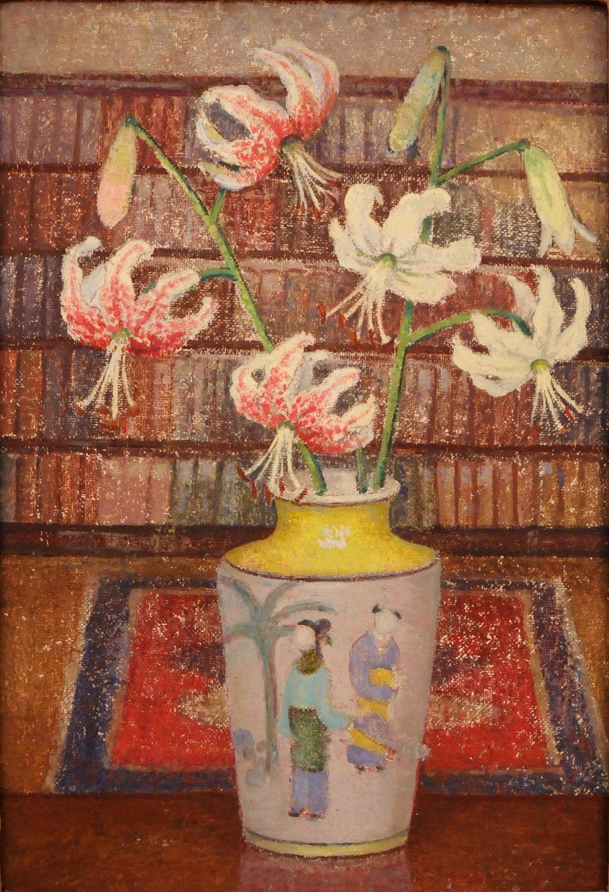

Lilies with Bookshelf

Towards the end of her life MacRae worked in the studio at her apartment at 888 Park Avenue. She was no longer painting large works and in Lilies with Bookshelf she has looked around and made use of her world in her apartment.
In this floral still life MacRae has abandoned her tapestry-like background in favor of the vase placed on a table in the doorway leading to the hallway with the bookshelf in the background. But she has not abandoned her painting technique of scraping back and allowing the underpaint or gesso to show through and adding succeeding layers of paint.
Download to print (PDF Document)

|
Lilies with Bookshelf |
Unsigned unframed |
Oil on board |
|
23 x 16 inches |
Floral Still Life |
Emma Fordyce MacRae |